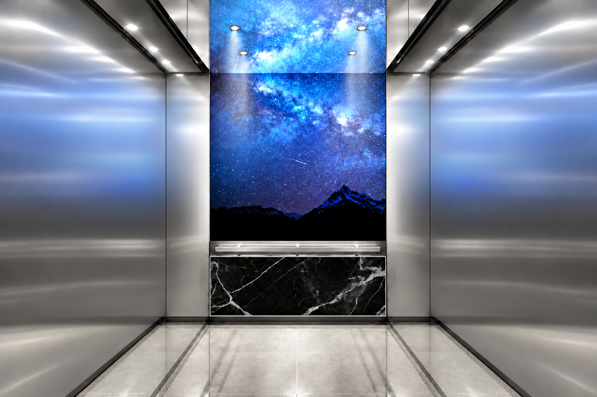

GREEN INNOVATION
안전을 설계하는 그린 엘리베이터의 기술은
자체 연구개발과 12종의 특허 기술을 바탕으로
더욱 안전하고 정밀한 이동 환경을 만듭니다.

조달우수
기술과 품질로 쌓은 신뢰
차별화된 기술과 품질 경쟁력을 바탕으로
공공조달 시장의 다양한 요구에 대응합니다.
제품의 안전성능과 신뢰성을 높이기 위한 지속적인 기술 개발을 통해 공공시설에 적합한 승강기
솔루션을 제공하며, 우수한 품질과
안정적인 제품 공급을 목표로 합니다.
공공조달 시장의 다양한 요구에 대응합니다.
제품의 안전성능과 신뢰성을 높이기 위한 지속적인 기술 개발을 통해 공공시설에 적합한 승강기
솔루션을 제공하며, 우수한 품질과
안정적인 제품 공급을 목표로 합니다.
